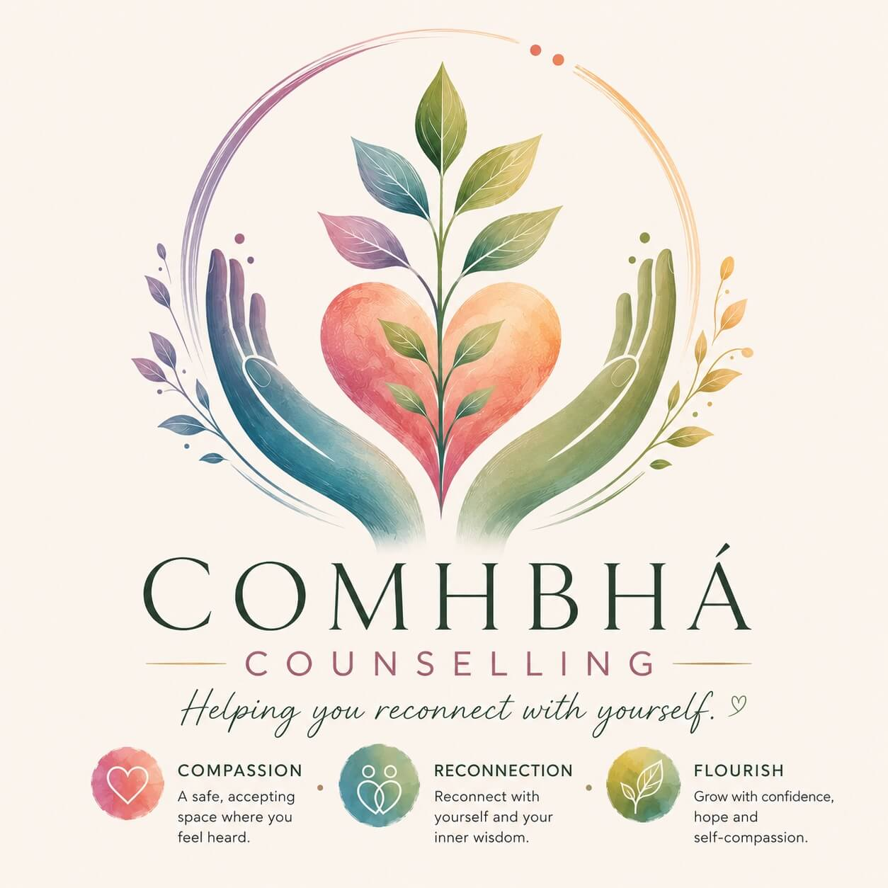
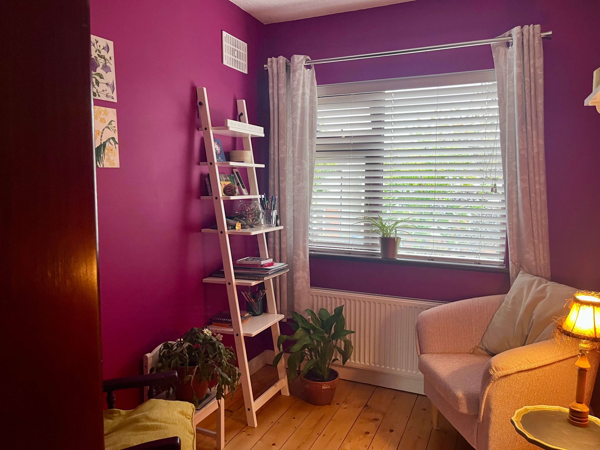

A compassionate space to reconnect with yourself, find clarity, and allow healing and growth to unfold.
Comhbhá is the Irish word for compassion - the belief that healing begins when we are met with kindness, understanding, and acceptance.
Online
In Person
By Phone
Working with young people (16+) and adults.

For over sixteen years, I've had the priviliege of supporting people through some of lifes most challenging and transformative moments. At the heart of my work is a deep belief in each person's capicity for healing, growth, and self discovery.
I approach therapy with calmness, compassion, and reflective curiosity, creating a space where you can feel genuinely seen, heard, and accepted.
Qualifications: B.A. Integrative Counselling and Art Therapy (South East Technological University/Dublin Art Therapy College) Postgraduate Diploma Guidance Counselling (Maynooth University) M15898 accredited member of the Irish Association of Counselling and Psychotherapy (IACAP)
At the heart of my work is the belief that meaningful change begins when we feel genuinely heard, understood, and accepted.
Rooted in person-centered counselling. I create the conditions where your own insight and inner wisdom can emerge. Together we explore your experiences with openness, compassion and curiosity, allowing change to unfold in a way that feels right for you.
Therapy isn't about becoming someone different. It's about creating the space where more of who you truly are can gently emerge.
Sometimes life can leave us feeling disconnected from ourselves, form others, or from the things that matter most to us. We may lose sight of our strengths, become overwhelmed by self-doubt, or struggle to recognise our own worth.
I believe therapy isn't about fixing what's broken or becoming someone different. It's about creating the conditions where you can begin to see yourself with greater compassion, reconnect with your strengths and values, and allow more of who you truly are to emerge.
When we feel genuinely seen, heard, and accepted, something begins to shift. With curiosity, reflection, and kindness, healing unfolds naturally, creating space for hope, confidence, amd a deeper connection with yourself.
A warm, accepting space where you feel heard, respected, and valued exactly as you are.
Careful attention not only to what you say, but also to what may be quietly waiting to be understood.
When words are difficult to find, creativity can offer another way of expressing thoughts, emotions and experiences.
Working with both mind and body, recognising that insight often comes in a variety of ways.
No two people are the same. Together we'll shape therapy around your unique needs.

Whatever has brought you here, you don't have to face it alone. Whether you have questions or would like to know more, you are welcome to get in touch.